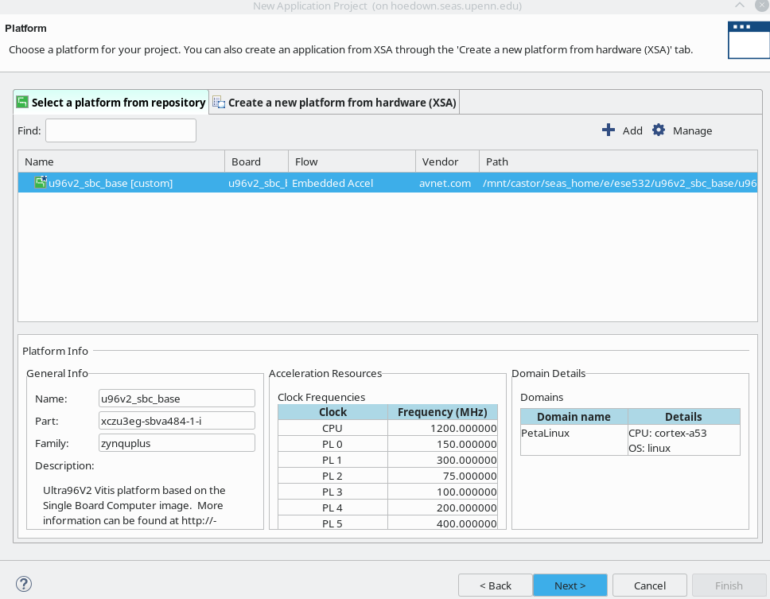
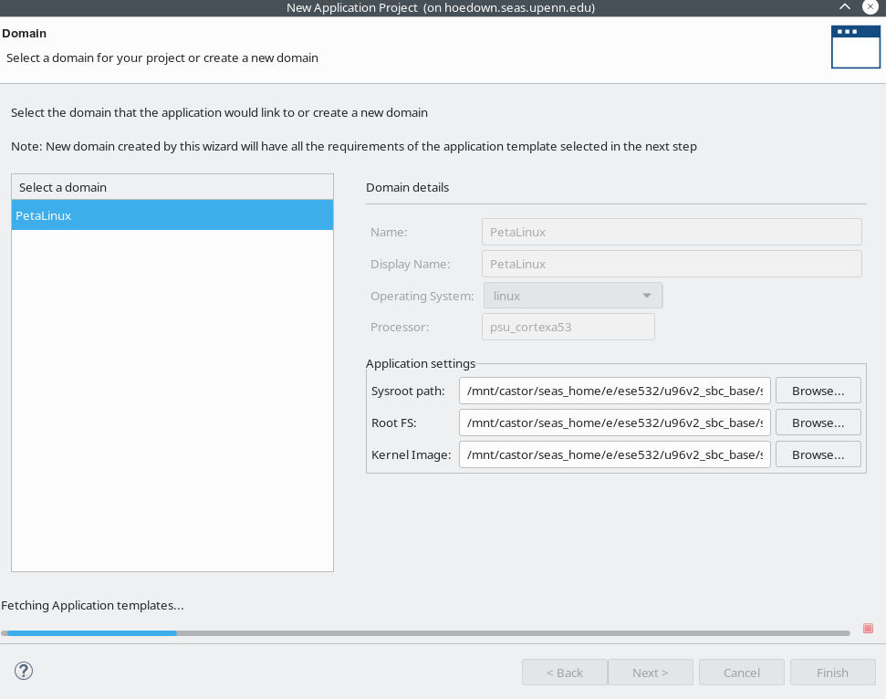
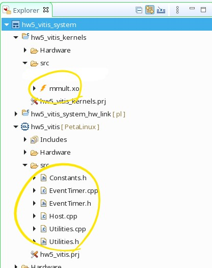
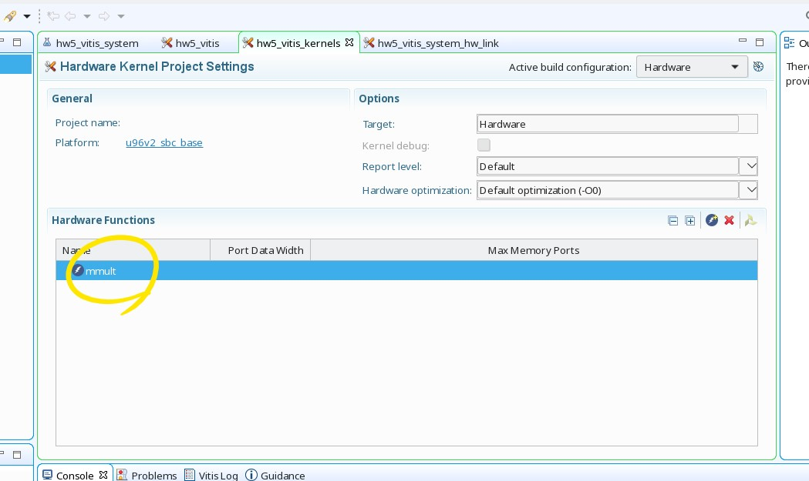
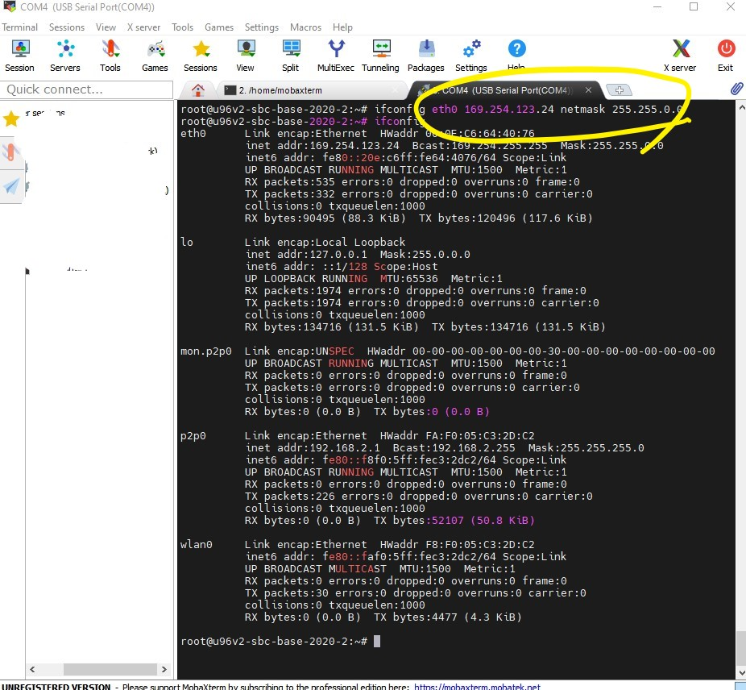
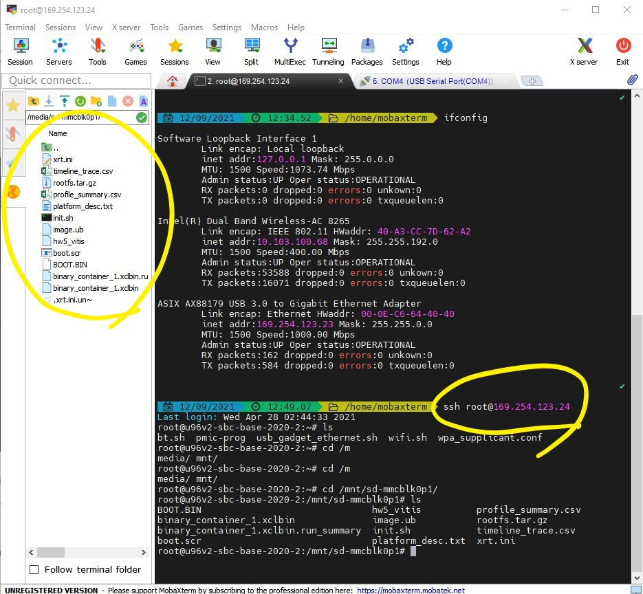

5.2. Setup and Walk-through¶
5.2.1. Hardware Acceleration¶
To implement a hardware function, it will ultimately be necessary to perform low-level placement and routing of the hardware onto the FPGA substrate. That is, the tools must decide which particular instance of each primitive is used (placement) or which wires to use for connections (routing). These tasks are typically much slower (at least 20 minutes, can take hours) than the compilation time for software (a few minutes). This means you will need to plan your time carefully for this lab and for subsequent labs. One way to optimize our development time is to be careful about when we invoke low-level placement and routing and when we can avoid it. This lab and next will show you a few techniques that allow you to reduce the number of times you need to invoke low-level placement and routing and introduce simulation and emulation you can use validate your design before invoking low-level placement and routing.
In the homework, you could either use linux machines in Detkin/Ketterer or install Vitis locally. If you want to install Vitis locally, we expect that your computer has at least:
Linux OS
16 GB RAM
4 cores
70 GB free hard disk space If you want to install Vitis locally, follow the instructions in Installing Vitis 2020.2 on your Personal Computer(Linux OS). If you want to use Detkin/Ketterer machines, jump to Obtaining and Running the Code.
5.2.1.1. Installing Vitis 2020.2 on your Personal Computer(Linux OS)¶
Note that Vitis is fully supported in Linux OS only. Follow the instructions below to install Vitis on your linux machine:
Download Xilinx Unified Installer 2020.2: Linux Self Extracting Web Installer in here. Create an account with Xilinx if you don’t have one.
Open a terminal and use the following command:
chmod +x Xilinx_Unified_2020.2_1118_1232_Lin64.bin
Extract the installer:
./Xilinx_Unified_2020.2_1118_1232_Lin64.bin --noexec --target ./xilinx-installer
Login with your Xilinx account:
./xsetup -b AuthTokenGen
Type the email you have registered for xilinx and press enter. Type the password and press enter - the command from step 4 completes with
Saved authentication token file successfully.Save the attached
ese532_install_config.txtand add your preferred installation location in theDestinationfield. The default location is/opt/Xilinx.Start the installation with the following command:
./xsetup -b Install -a XilinxEULA,3rdPartyEULA,WebTalkTerms -c ese532_install_config.txt
The full installation will take about 30 min - 1 hour.
Open the file
~/.bashrcin your terminal and add the following line. This is the license for using Vitis:export LM_LICENSE_FILE="2100@potato.cis.upenn.edu;1709@potato.cis.upenn.edu;1717@potato.cis.upenn.edu;27010@potato.cis.upenn.edu;27009@potato.cis.upenn.edu"
Do
source ~/.bashrcto update the terminal environment with this variable.You might need to issue the following commands if you encounter an error with
libtinfo:sudo apt update sudo apt install libtinfo-dev sudo ln -s /lib/x86_64-linux-gnu/libtinfo.so.6 /lib/x86_64-linux-gnu/libtinfo.so.5
5.2.1.2. Obtaining and Running the Code¶
In this homework, we will first run a matrix multiplication function on the cpu and then run the same matrix multiplication function on the FPGA.
Pull in the latest changes using:
cd ese532_code/
git pull origin master
The code you will use for homework submission
is in the hw5 directory. The directory structure looks like this:
hw5/
sourceMe.sh
xrt.ini
common/
Constants.h
EventTimer.h
EventTimer.cpp
Utilities.cpp
Utilities.h
hls/
MatrixMultiplication.h
MatrixMultiplication.cpp
Testbench.cpp
Host.cpp
sourceMe.shwill help you to source Xilins toolsxrt.inidefines the options necessary for Vitis Analyzer.The
commonfolder has header files and helper functions.You will mostly be working with the code in the
hlsfolder. Thehls/MatrixMultiplication.cppfile has the function that gets compiled to a hardware function (known as a kernel in Vitis). TheHost.cppfile has the “driver” code that transfers the data to the fpga, runs the kernel, fetches back the result from the kernel and then verifies it for correctness.Read this to learn about the syntax of the code in
hls/MatrixMultiplication.cpp.Read this to learn about how the hardware function is utilized in
Host.cppRead this to learn about simple memory allocation and OpenCL execution.
Read this to learn about aligned memory allocation with OpenCL.
We are now going to start working on the Homework Submission where we will follow a bottom-up approach and optimize our hardware function using Vitis HLS IDE first and then re-compile it and run it on the FPGA in the end. Scroll to Using Vitis HLS to learn about how to use Vitis HLS.
Once you have 3i completed from the Homework Submission, proceed Creating Vitis Project.
5.2.1.3. Using Vitis HLS¶
Creating a new project in Vitis HLS is explained here. Make sure you enter the top-level function during the creation of the project (although you can also change it later). The top-level function is the function that will be called by the part of your application that runs in software. Vitis HLS needs it for synthesis. You can also indicate which files you want to create. It is wise to add a testbench file too, while you are creating the project.
We have provided a testbench in Vitis HLS to debug the hardware.
The requirements for testbenches are not any different from other
software applications written in C. Similar to them, testbenches
have a main function that is invoked. To the main function you can
add any functionality needed to test your function. That includes calling
the top function that you would like to test. When the testbench is
satisfied that the function is correct, it should return 0. Otherwise, it
should return another value.
You can run the testbench by selecting Project \(\rightarrow\) Run C Simulation from the menu. A window should pop up. The default settings of the dialog should be fine. You can dismiss the dialog by pressing OK. You can see in the Console whether your test has passed. If your test fails, you can run the test in debug mode. This can be done by repeating the same procedure, except that you should check the box in front of Launch Debugger this time before you dismiss the dialog. This will take you to the Debug perspective, where you can set breakpoints and use the step into/step over buttons to debug. You can go back to the original perspective by pressing the Synthesis button in the top, right corner.
To rebuild the code, you should go back to Synthesis mode, and click Run C Simulation again to rebuild the code.
Once you are satisfied with your code, you can run Solution \(\rightarrow\) Run C Synthesis \(\rightarrow\) Active Solution from the menu to synthesize your design. You can also verify the synthesized version of your accelerator in your testbench. If you choose to do so, Vitis HLS will run your accelerator in a simulator, so this method is called C/RTL Cosimulation. The employed cycle-level simulation is much slower than realtime execution, so this method may not be practical for every testbench. It avoids needing to run low level-placement and routing and will give you more visibility into the behavior of your design. Anyway, you can start it by choosing Solution \(\rightarrow\) Run C/RTL Cosimulation from the menu.
The hardware implementation that Vitis HLS selects can be controlled
by including pragmas, e.g. #pragma HLS inline, in your code.
The different pragmas that you can use in your functions are listed in Vitis HLS User Guide.
When you have obtained a satisfying hardware description in Vitis HLS, you will Export Vitis Kernel, i.e. a Xilinx object file (.xo).
5.2.1.4. Creating Vitis Project¶
Make sure you have 3i completed from the Homework Submission.
First, cd to the HW5 directory and source settings to be able to run vitis:
source sourceMe.sh. If you work locally, sourcesettings64.shin vitis installation directory.Start Vitis by
vitis &in the terminal. You should now see the IDE.Select Workspace as you want and click Launch.
Select Create Application Project.
You will see Ultra96 platform as shown below. Click Next.
Fig. 5.1 Select Ultra96 platform¶
Set project name as you want. e.g. hw5_vitis. Then, click Next.
You will see Sysroot path, Root FS, and Kernel Image are already set. Click Next.
Fig. 5.2 Application settings should have been already set¶
We will create our own application. So, select Empty Application and click Finish. The Vitis IDE creates the project and opens the Design perspective.
In the Project Explorer view, you will see hw5_vitis [Petalinux]. This is where the host code should be placed. Right-click the src folder under hw5_vitis [Petalinux], and select Import Sources.
Check all the utility codes in
ese532_code/hw5/commonand click Finish.Right-click the src folder again, and similarly import
Host.cppinese532_code/hw5/.This time, you want to add the kernel you just generated with Vitis HLS. You will see hw5_vitis_kernels in the Project Explorer. Right-click the src folder under hw5_vitis_kernels, and select Import Sources. Similarly, add
mmult.xoto kernel’s src folder and click Finish. You now have the host application,host.cpp, and the Vitis HLS kernel,mmult.xo, in the project. Click Next.Fig. 5.3 Import source files¶
Double-click kernel project in the Project Exploer to open up the Hardware Kernel Project Settings.
In the Hardware Functions section of the Project Settings view, select Add Hardware Functions.
You will see mmult function in the
mmult.xo. Select mmult function and click OK.Fig. 5.4 Add hardware function¶
You will see Active build configuration on the upper right corner. Set it to Hardware.
In the Assistant view on the lower-left corner, you will see Hardware is selected. Right-click Hardware and click build. This process will take >20 minutes depending on your kernel design.
5.2.2. Environment Setup¶
5.2.2.1. Setting up Ultra96 and Host Computer¶
Your setup should look like Fig. 5.5. We will be using this setup for the rest of the semester.

Fig. 5.5 Development Environment¶
5.2.2.2. Run on the FPGA¶
5.2.2.2.1. Write the SD Card Image (one time setup)¶
Once the build has completed in Creating Vitis Project section, you will see a generated package directory. e.g. hw5_vitis_system/Hardware/package.
The package directory contains the following
files that we are interested in:
package/sd_card.img
package/sd_card/BOOT.BIN
package/sd_card/boot.scr
package/sd_card/image.ub
package/sd_card/hw5_vitis
package/sd_card/binary_container_1.xclbin
We suggest you to copy files above to your local machine and proceed.
If your laptop is Linux, you can use scp and if you are using
Windows you can use programs like WinSCP.
When you are building for the first time, we will write the
package/sd_card.img image to our SD card.
Write
sd_card.imgto your SD card.In Ubuntu 20.04, you can use
Startup Disk Creator.You can also use Rufus or balenaEtcher.
Once you finish writing the image to the SD card, slide it into your Ultra96’s SD card slot.
Note
We will only have to write our SD card image once. When we recompile our code, the files that will need to be updated are:
package/sd_card/BOOT.BIN
package/sd_card/boot.scr
package/sd_card/image.ub
package/sd_card/hw5_vitis
package/sd_card/binary_container_1.xclbin
We will copy those files to the running board using scp.
We will then reboot the board, which will load the updated
boot files. The boot files contain the bitstream, which
reconfigures the Programmable Logic of the Ultra96. Hence,
we need a reboot. If you copy the files, but don’t do a reboot,
you will see that your program throws an error.
Note
If your Ultra96 is connected to a different machine from the one where you are running Vitis (e.g., you are running Vitis on a detkin machine, but your Ultra96 is connected to your laptop), you will need to first copy the files from the Vitis machine to the Ultra96-host machine and then copy them from the Ultra96-host to the Ultra96.
Caution
Make sure you don’t hot plug/unplug the SD card. This can potentially corrupt the SD card/damage the board. Always shut down the device first and then insert/take out the SD card. You can shut down the device by typing “poweroff” in the serial console of the device.
5.2.2.2.2. Boot the Ultra96¶
Note
Please make sure you have set the board in SD card mode as follows:
{kind=link}
If you are receiving the boards disassembled, make sure you have properly connected the JTAG module as follows:
{kind=link}
From now on, the setup is really similar to the one in HW4. But this time, we have something to run on FPGA’s programmable logic!
Make sure you have the board connected as shown in Fig. 5.5.
We will use two terminals on our host computer:
the first terminal will be used to copy binaries into the Ultra96
the second terminal will be used to access the serial console of the Ultra96
We will now open the serial console of the Ultra96. You can use any program like
minicom,gtktermorPuTTYto connect to our serial port. We are usingminicomand following is the command we use for connecting to the serial port:sudo minicom -D /dev/ttyUSB1
/dev/ttyUSB1is the port where the Ultra96 dumps all the console output. If you are on Windows, this will be something different, likeCOM4. When you want to get out ofminicom, useCTRL-A Z qAfter you have connected to the serial port, boot the board by pressing the boot switch as shown in Fig. 5.8.
Watch your serial console for boot messages.
Note that near the end some messages spill, so just press Enter couple of times, and you see that you need to login. Login as
rootwith Password:root.root@u96v2-sbc-base-2020-2:~#
We will now enable ethernet connection between our Ultra96 and the host computer, such that we can copy files between the devices. Issue the following command in the serial console:
ifconfig eth0 10.10.7.1 netmask 255.0.0.0
Now in your second console in the host computer, first find out the name that has been assigned to the USB-ethernet device by issuing
ifconfigenx000ec6c4b500: flags=4163<UP,BROADCAST,RUNNING,MULTICAST> mtu 1500 inet 10.10.7.2 netmask 255.0.0.0 broadcast 10.255.255.255 ether 00:0e:c6:c4:b5:00 txqueuelen 1000 (Ethernet) RX packets 213 bytes 32750 (32.7 KB) RX errors 0 dropped 0 overruns 0 frame 0 TX packets 249 bytes 25958 (25.9 KB) TX errors 0 dropped 0 overruns 0 carrier 0 collisions 0 lo: flags=73<UP,LOOPBACK,RUNNING> mtu 65536 inet 127.0.0.1 netmask 255.0.0.0 inet6 ::1 prefixlen 128 scopeid 0x10<host> loop txqueuelen 1000 (Local Loopback) RX packets 570887 bytes 920673672 (920.6 MB) RX errors 0 dropped 0 overruns 0 frame 0 TX packets 570887 bytes 920673672 (920.6 MB) TX errors 0 dropped 0 overruns 0 carrier 0 collisions 0
In our case, the USB-ethernet device is
enx000ec6c4b500. Now issue the following command:sudo ifconfig enx000ec6c4b500 10.10.7.2 netmask 255.0.0.0
We have now assigned IP
10.10.7.1to our Ultra96 and IP10.10.7.2to our USB ethernet device connected to our host computer. You can test the connection by doingping 10.10.7.2from the Ultra96 serial console, and doingping 10.10.7.1from the host computer.If you haven’t already done so, you can now use scp to copy files from package/ to /mnt/sd-mmcblk0p1/ on the Ultra96.
On the serial console, you can now run your code as follows:
cd /mnt/sd-mmcblk0p1 export XILINX_XRT=/usr ./hw5_vitis binary_container_1.xclbin
You should see the following output:
root@u96v2-sbc-base-2020-2:/mnt/sd-mmcblk0p1# ./hw5_vitis binary_container_1.xclbin Loading: 'binary_container_1.xclbin' TEST PASSED
Let’s copy another file. Copy the
xrt.inifile from your computer to the/mnt/sd-mmcblk0p1directory of the Ultra96 as follows:scp xrt.ini root@10.10.7.1:/mnt/sd-mmcblk0p1/
The default password of the device is
root(you can setup ssh keys so that you don’t have to type the passwords all the time).Now re-run the program as before. You should now see the generated files:
binary_container_1.xclbin.run_summary profile_summary.csv timeline_trace.csv
Copy these files to your computer by issuing the following command. Modify the command with the username of your computer and the directory you want to put the files in.
scp binary_container_1.xclbin.run_summary timeline_trace.csv profile_summary.csv lilbirb@10.10.7.2:/media/lilbirb/research/
{kind=link}
Note
If your Ultra96 is connected to a different machine from the one where you are running Vitis (e.g., you are running Vitis on a detkin machine, but your Ultra96 is connected to your laptop), you will need to first copy the files the Ultra96-host machine as above, then copy from the Ultra96-host machine to the Vitis machine.
You can now use Vitis Analayzer in your host computer to view the trace by doing:
vitis_analyzer ./binary_container_1.xclbin.run_summary
When you modify your HLS code, that will cause the hardware to change, and hence the following files will need to be copied to the
/mnt/sd-mmcblk0p1directorypackage/sd_card/BOOT.BIN package/sd_card/boot.scr package/sd_card/image.ub package/sd_card/hw5_vitis package/sd_card/binary_container_1.xclbin
After you copy these files, type
rebootin the serial console and that will reprogram the device. Note that everytime you reboot the device, you will need to issue the following commands:export XILINX_XRT=/usr ifconfig eth0 10.10.7.1 netmask 255.0.0.0
You can put these commands in your
~/.bashrcof the Ultra96 (usevimto edit this file in Ultra96), so that you don’t have to type it all the time.When you only modify your host code, you don’t have to copy any of the files mentioned above and only neeed to copy the OpenCL host binary, which is
hw5_vitisin this example. You also don’t need to reboot the device in that case.
This concludes a top-down walk-through of the steps involved in running a hardware function on the Ultra96.
5.2.2.2.3. Boot the Ultra96 (for Windows users only)¶
Connect your ultra96 jtag usb to your computer. Also connect the ethernet-usb to ultra96 and the computer. Go to device managers and note down the serial port of the usb. In the example case, it’s COM4.

Fig. 5.9 Find the port¶
Download and install MobaXterm from here.
Start MobaXterm. Click Session in the left top corner and select Serial. Set the serial port as the one you found in the previous step and bps. In the example case, it’s COM4 and 115200. Click OK.
Boot the board by pressing the boot switch as shown in Fig. 5.8.
Note that near the end some messages spill, so just press Enter couple of times, and you see that you need to login. Login as
rootwith Password:root.root@u96v2-sbc-base-2020-2:~#
In the local machine’s session, type ifconfig and find out the ip address and netmask assigned to the USB-ethernet device. Following is the example:

Fig. 5.10 ifconfig to find out your local machine’s ip¶
Assign your Ultra96 an ip address on the same subnet as the USB-ethernet, e.g. from the previous step, the ip address of the local machine is
169.254.123.23and netmask is255.255.0.0. So, let’s assign the ultra96 to a ip of169.254.123.24(note that this is 24!) as follows:Fig. 5.11 Connect you machine and Ultra96¶
Your devices are not connected. Go to the local machine’s tab and ssh into the Ultra96:
Fig. 5.12 ssh in to the Ultra96 and transfer files¶
If you haven’t already done so, you can now use WinSCP to copy files from BOOT to /mnt/sd-mmcblk0p1 on the Ultra96.
On the serial console, you can now run your code as follows:
cd /mnt/sd-mmcblk0p1 export XILINX_XRT=/usr ./hw5_vitis binary_container_1.xclbin
You should see the following output:
root@u96v2-sbc-base-2020-2:/mnt/sd-mmcblk0p1# ./hw5_vitis binary_container_1.xclbin Loading: 'binary_container_1.xclbin' TEST PASSED
You can see that you can view the files of the Ultra96 on the left hand side. You can easily drag and drop files from/to the local machine to/from Ultra96. Copy
xrt.inifile from your computer to the/mnt/sd-mmcblk0p1directory of the Ultra96.Now re-run the program as before. You should now see the generated files:
binary_container_1.xclbin.run_summary profile_summary.csv timeline_trace.csv
Copy these files back to your local machine and analyze with Vitis Analyzer.